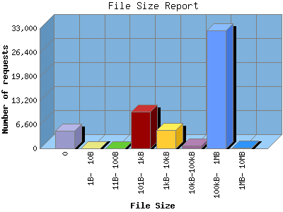

NPS Internet Solutions, Inc.
NPS Internet Solutions, Inc.
The File Size Report categorizes the size of the file being requested. This can be useful in optimizing site performance. (Remember that on a 28.8Kps modem, it will take on average of 40 seconds to download 100Kb of data.)

| File Size | Number of requests | Percentage of the bytes | |
|---|---|---|---|
| 1. | 0 | 4,910 | 0.00% |
| 2. | 1B- 10B | 0 | 0.00% |
| 3. | 11B- 100B | 0 | 0.00% |
| 4. | 101B- 1kB | 10,063 | 0.04% |
| 5. | 1kB- 10kB | 5,028 | 0.32% |
| 6. | 10kB-100kB | 736 | 0.72% |
| 7. | 100kB- 1MB | 32,505 | 91.85% |
| 8. | 1MB- 10MB | 148 | 7.08% |
This report was generated on August 16, 2004 03:59.
Report time frame December 30, 2003 01:23 to August 16, 2004 09:47.
| Web statistics report powered by: | |
|
NPS Internet Solutions, Inc.
|
|
| Web statistics report produced by: analog 5.32 / Report Magic 2.21 |